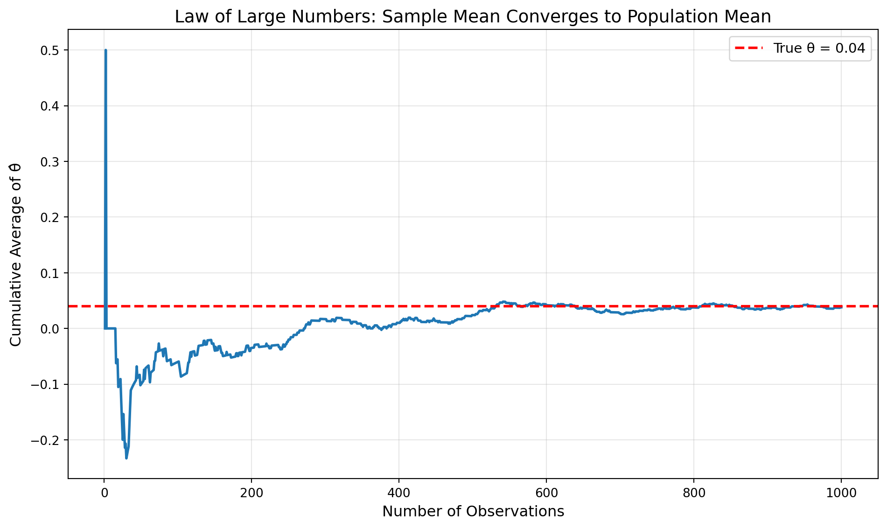

Simulating Key Ideas from Classical Frequentist Statistics
A/B Testing
Statistics
Marketing Analytics
Author
Benjamin Ma
Published
April 15, 2026
Introduction
Imagine you run a website, and your landing page features a prominent call-to-action (CTA) inviting visitors to sign up for your newsletter. It’s a simple decision point, but it matters: newsletter subscribers are your future customers, your community, your reach.
You’ve narrowed it down to two options: - CTA A: “Sign up for our newsletter here!” - CTA B: “Stay up to date by signing up!”
Both seem reasonable, but which one will actually get more people to click? You could guess, or you could test. Enter the A/B test.
An A/B test is a randomized experiment where visitors are randomly assigned to see one of two versions of your page. Half your visitors see CTA A, half see CTA B, and you measure which group signs up at a higher rate. It’s the gold standard for making data-driven decisions in product design, marketing, and beyond.
But beneath the surface of this simple experiment lies a rich statistical framework. In this post, we’ll simulate an A/B test from scratch, using it as a vehicle to explore foundational concepts in frequentist statistics: the Law of Large Numbers, the Central Limit Theorem, bootstrap methods, hypothesis testing, and the regression equivalence. We’ll also confront a common pitfall—the problem of “peeking” at your results too early.
By the end, you’ll understand not just how to run an A/B test, but why the statistics work the way they do.
The A/B Test as a Statistical Problem
Every visitor to our landing page makes a binary choice: sign up (1) or don’t (0). We can model each visitor’s outcome as a draw from a Bernoulli distribution with parameter π, the probability of signing up.
Here’s the key insight: the CTA a visitor sees may influence their behavior. So we allow the probability to differ across groups: - Visitors who see CTA A have sign-up probability \(\pi_A\) - Visitors who see CTA B have sign-up probability \(\pi_B\)
The quantity we care about is the difference in sign-up rates:
\[\theta = \pi_A - \pi_B\]
If \(\theta > 0\), CTA A is better. If \(\theta < 0\), CTA B wins. If \(\theta = 0\), they’re equivalent.
Our estimator of θ is straightforward: take the difference in sample proportions.
\[\hat\theta = \bar{X}_A - \bar{X}_B\]
Since each observation is either 0 or 1, the sample mean is just the proportion who signed up. So \(\bar{X}_A = \hat\pi_A\) (the observed sign-up rate in group A) and similarly for B.
With this framework in place, we’re ready to simulate.
Simulating Data
In the real world, we wouldn’t know the true values of \(\pi_A\) and \(\pi_B\)—that’s precisely what we’re trying to estimate. But for this exercise, we’ll set them ourselves. This lets us study how our estimator behaves when we know the ground truth, which is invaluable for building intuition.
Let’s suppose: - \(\pi_A = 0.22\) (CTA A converts 22% of visitors) - \(\pi_B = 0.18\) (CTA B converts 18% of visitors) - Therefore, the true difference is \(\theta = 0.04\) (a 4 percentage point lift)
We’ll simulate 1,000 visitors for each CTA—2,000 total.
import numpy as npimport polars as plimport matplotlib.pyplot as pltfrom scipy import statsnp.random.seed(42)# True parameterspi_A =0.22pi_B =0.18theta_true = pi_A - pi_Bn =1000# Simulate datadata_A = np.random.binomial(1, pi_A, n)data_B = np.random.binomial(1, pi_B, n)df = pl.DataFrame({"signup_A": data_A,"signup_B": data_B,})# Useful later for the hypothesis test sectiondf_test = df# Compute summary statsresults = df.select( pl.col("signup_A").mean().alias("rate_A"), pl.col("signup_B").mean().alias("rate_B"), (pl.col("signup_A").mean() - pl.col("signup_B").mean()).alias("diff"))rate_A, rate_B, observed_diff = results.row(0)print(f"Simulated {n} visitors for each CTA")print(f"True θ = {theta_true:.4f}")print(f"Observed sign-up rate A: {rate_A:.4f}")print(f"Observed sign-up rate B: {rate_B:.4f}")print(f"Observed difference: {observed_diff:.4f}")
The Law of Large Numbers (LLN) is one of the most fundamental results in probability theory. It tells us that as our sample size grows, the sample mean converges to the population mean. In our context, this means that \(\hat\theta\) will get closer and closer to the true θ as we collect more data.
This is what gives us confidence that our estimator works: with enough visitors, we’ll pin down the true difference.
Let’s see this visually. We’ll compute the running average of our estimate—what happens if we calculate \(\hat\theta\) using just the first visitor from each group, then the first two, then the first three, and so on, up to all 1,000.
df_lln = ( pl.DataFrame({"visitor": np.arange(1, len(data_A) +1),"signup_A": data_A,"signup_B": data_B, }) .with_columns( (pl.col("signup_A") - pl.col("signup_B")).alias("difference") ) .with_columns( (pl.col("difference").cum_sum() / pl.col("visitor")).alias("cumulative_avg") ))# Plotplt.figure(figsize=(10, 6))plt.plot(df_lln["visitor"], df_lln["cumulative_avg"], linewidth=2)plt.axhline(y=theta_true, color="red", linestyle="--", linewidth=2, label=f"True θ = {theta_true:.2f}")plt.xlabel("Number of Observations", fontsize=12)plt.ylabel("Cumulative Average of θ̂", fontsize=12)plt.title("Law of Large Numbers: Sample Mean Converges to Population Mean", fontsize=14)plt.legend(fontsize=11)plt.grid(alpha=0.3)plt.tight_layout()plt.show()

Notice how the estimate bounces around wildly when we have only a handful of observations—it might be 0.5, then -0.3, then 0.2. But as the sample grows, it settles down and hovers around the true value of 0.04. This is the LLN in action: more data means less noise.
This is reassuring, but it raises a new question: how much uncertainty remains even with 1,000 observations? For that, we need standard errors.
Bootstrap Standard Errors
We trust our estimator, but how precise is it? To quantify uncertainty, we need a confidence interval—a range that plausibly contains the true θ. To build that interval, we first need to estimate the standard error of \(\hat\theta\).
One powerful way to do this is bootstrapping, a resampling method that doesn’t require mathematical formulas. Here’s the idea:
Randomly resample (with replacement) from our observed data
Compute \(\hat\theta\) on that resample
Repeat many times
The standard deviation of those resampled estimates is our standard error
Let’s implement it:
# Point estimate from observed datatheta_hat = data_A.mean() - data_B.mean()# Bootstrapn_bootstrap =1000bootstrap_estimates = np.empty(n_bootstrap)for i inrange(n_bootstrap): resample_A = np.random.choice(data_A, size=n, replace=True) resample_B = np.random.choice(data_B, size=n, replace=True) bootstrap_estimates[i] = resample_A.mean() - resample_B.mean()# Store bootstrap draws in Polarsbootstrap_df = pl.DataFrame({"bootstrap_estimate": bootstrap_estimates})# Bootstrap standard errorse_bootstrap = bootstrap_df.select( pl.col("bootstrap_estimate").std().alias("se_bootstrap")).item()# Analytical standard errorsummary = pl.DataFrame({"group": ["A", "B"],"rate": [data_A.mean(), data_B.mean()],"n": [n, n]})pi_A_hat = summary.filter(pl.col("group") =="A").select("rate").item()pi_B_hat = summary.filter(pl.col("group") =="B").select("rate").item()se_analytical = np.sqrt( pi_A_hat * (1- pi_A_hat) / n + pi_B_hat * (1- pi_B_hat) / n)print(f"Bootstrap standard error: {se_bootstrap:.4f}")print(f"Analytical standard error: {se_analytical:.4f}")print(f"Difference: {abs(se_bootstrap - se_analytical):.4f}")
Bootstrap standard error: 0.0177
Analytical standard error: 0.0178
Difference: 0.0001
The bootstrap and analytical standard errors are nearly identical—the bootstrap “works” because it mimics the sampling process that generated our data.
Now we can construct a 95% confidence interval. Using the bootstrap standard error and assuming approximate normality (which we’ll justify in the next section), the interval is:
Interpretation: We are 95% confident that the true difference in sign-up rates is between these bounds. In repeated experiments, 95% of intervals constructed this way would contain the true θ.
The Central Limit Theorem
Why did we assume the sampling distribution of \(\hat\theta\) is approximately Normal? Because of the Central Limit Theorem (CLT).
The CLT states that regardless of the shape of the underlying population distribution (Bernoulli in our case), the distribution of the sample mean becomes approximately Normal as the sample size grows. Since \(\hat\theta\) is a difference of sample means, it too becomes approximately Normal.
Let’s see this in action. We’ll simulate the sampling distribution of \(\hat\theta\) for different sample sizes: n = 25, 50, 100, and 500.
Watch how the distribution evolves. At n = 25, the histogram is choppy and somewhat skewed—it doesn’t look very Normal. But as we increase to n = 50, 100, and 500, the distribution becomes smoother and more symmetric, converging to the bell-shaped Normal curve (shown in red).
This is the CLT at work. For large samples, we can reliably use Normal-based inference (z-tests, confidence intervals) even though the underlying data are Bernoulli, not Normal.
Hypothesis Testing
Armed with the CLT, we can now perform a formal hypothesis test. Our research question is: do the two CTAs produce different sign-up rates?
We formalize this as: - Null hypothesis\(H_0\): \(\theta = 0\) (no difference) - Alternative hypothesis\(H_1\): \(\theta \neq 0\) (there is a difference)
The goal is to assess whether our data provide sufficient evidence to reject \(H_0\).
The Test Statistic
To test this, we standardize \(\hat\theta\) by dividing by its standard error:
\[z = \frac{\hat\theta - 0}{SE(\hat\theta)}\]
Why does this help? Let’s walk through the logic:
By the CLT, we know \(\hat\theta\) is approximately Normal for large samples
Under \(H_0\), the mean of that distribution is 0 (since we assume \(\theta = 0\))
When we standardize a Normal random variable (subtract the mean, divide by the standard deviation), we get a standard Normal: \(z \sim N(0,1)\)
This is powerful because we now know the distribution of our test statistic under the null hypothesis. We can ask: “If there were truly no difference, how extreme is our observed z?”
A Note on Terminology
You might hear this called a “t-test,” which can be confusing. The classical Student’s t-test arises when: - The underlying data are Normal (not Bernoulli) - The variance is unknown and must be estimated - The test statistic follows an exact t-distribution
In our case, the data are Bernoulli, not Normal, so there’s no exact t-distribution. Instead, the CLT gives us approximate Normality. What we’re really doing is a z-test. For large samples, the t-distribution and standard Normal are nearly identical, so the distinction rarely matters in practice—but it’s important to understand the theory.
Running the Test
# Compute test statistic# Pooled proportion under H0: pi_A = pi_Bpooled_rate = ( df_test.select( (pl.col("signup_A").sum() + pl.col("signup_B").sum()) / (2* n) ).item())se_pooled = np.sqrt( pooled_rate * (1- pooled_rate) * (1/ n +1/ n))z_stat = theta_hat / se_pooledp_value =2* (1- stats.norm.cdf(abs(z_stat)))print("Two-sample proportion z-test:")print(f"θ̂ = {theta_hat:.4f}")print(f"Pooled SE = {se_pooled:.4f}")print(f"z = {z_stat:.4f}")print(f"p-value = {p_value:.4f}")print(f"\nAt α = 0.05: {'Reject H₀'if p_value <0.05else'Fail to reject H₀'}")
Two-sample proportion z-test:
θ̂ = 0.0380
Pooled SE = 0.0178
z = 2.1364
p-value = 0.0326
At α = 0.05: Reject H₀
Interpretation: Our p-value measures the probability of observing a difference as extreme as ours (or more extreme) if the null hypothesis were true. A small p-value (typically < 0.05) suggests the data are incompatible with \(H_0\), leading us to reject it in favor of the alternative.
The T-Test as a Regression
Here’s a beautiful connection that unifies hypothesis testing and regression: the two-sample t-test is mathematically equivalent to a simple linear regression.
This might seem surprising, but it’s incredibly useful. It means the same framework you use for regression can handle A/B tests, and it generalizes naturally to more complex experimental designs (multiple treatment arms, covariates, interactions).
The Setup
We’ll stack our data into a single dataset with two columns: - \(Y_i\): outcome (1 if signed up, 0 otherwise) - \(D_i\): treatment indicator (1 if saw CTA A, 0 if saw CTA B)
Then we fit the regression:
\[Y_i = \beta_0 + \beta_1 D_i + \varepsilon_i\]
Interpreting the Coefficients
\(\beta_0\) is the expected value of \(Y\) when \(D = 0\), i.e., the mean sign-up rate for CTA B: \(\beta_0 = \pi_B\)
\(\beta_0 + \beta_1\) is the expected value when \(D = 1\), i.e., the mean for CTA A: \(\beta_0 + \beta_1 = \pi_A\)
Therefore, \(\beta_1 = \pi_A - \pi_B = \theta\)
The OLS estimate \(\hat\beta_1\) is numerically identical to \(\hat\theta = \bar{X}_A - \bar{X}_B\).
from sklearn.linear_model import LinearRegressionfrom scipy.stats import t as t_dist# Create regression datasetdf_reg = pl.DataFrame({"Y": np.concatenate([data_A, data_B]),"D": np.concatenate([np.ones(n), np.zeros(n)]),})# Fit regression: Y_i = beta_0 + beta_1 D_i + e_iX = df_reg.select("D").to_numpy()Y = df_reg["Y"].to_numpy()model = LinearRegression()model.fit(X, Y)beta_0 = model.intercept_beta_1 = model.coef_[0]# Residual-based standard error for beta_1y_hat = model.predict(X)residuals = Y - y_hatn_total =len(Y)mse = np.sum(residuals **2) / (n_total -2)X_with_intercept = np.column_stack([np.ones(n_total), X.flatten()])var_beta = mse * np.linalg.inv(X_with_intercept.T @ X_with_intercept)se_beta_1 = np.sqrt(var_beta[1, 1])# t-statistic and p-valuet_stat = beta_1 / se_beta_1p_value_reg =2* (1- t_dist.cdf(abs(t_stat), df=n_total -2))# Group means from Polars, for comparisongroup_summary = ( df_reg.group_by("D") .agg( pl.col("Y").mean().alias("mean_Y"), pl.len().alias("n") ) .sort("D"))theta_from_means = ( group_summary.filter(pl.col("D") ==1).select("mean_Y").item()- group_summary.filter(pl.col("D") ==0).select("mean_Y").item())reg_summary = pl.DataFrame({"beta_0": [beta_0],"beta_1": [beta_1],"se_beta_1": [se_beta_1],"t_stat": [t_stat],"p_value": [p_value_reg],"theta_from_means": [theta_from_means],"match": [np.isclose(beta_1, theta_from_means)],})print("Regression Results:")print(f"β₀ (intercept, π_B): {beta_0:.4f}")print(f"β₁ (treatment effect, θ̂): {beta_1:.4f}")print(f"SE(β₁): {se_beta_1:.4f}")print(f"t-statistic: {t_stat:.4f}")print(f"p-value: {p_value_reg:.4f}")print("\nComparison to difference in means:")print(f"θ̂ from group means: {theta_from_means:.4f}")print(f"β₁ from regression: {beta_1:.4f}")print(f"Match: {np.isclose(beta_1, theta_from_means)}")print("\nSummary table:")print(reg_summary)
The estimates match perfectly! The small difference in standard errors comes from how variance is computed: the two-sample formula allows separate variances for each group, while OLS assumes a single pooled variance. For practical purposes, they yield the same conclusion.
Why this matters: The regression framework makes it trivial to extend your A/B test. Want to add a third treatment arm? Just add another indicator variable. Want to control for pre-treatment covariates? Add them as regressors. The machinery stays the same.
The Problem with Peeking
You’ve launched your A/B test, and after a few days, you’re eager to know the results. Your boss is even more impatient. She suggests: “Why wait? Let’s check the results every day. If we see a significant difference, we’ll stop early and roll out the winner.”
This sounds reasonable—why not adapt based on what you’re seeing? The problem is that peeking invalidates classical hypothesis testing.
Why Peeking Breaks Things
Recall that a single hypothesis test at \(\alpha = 0.05\) has a 5% chance of a false positive (rejecting \(H_0\) when it’s actually true). But when you conduct multiple tests on accumulating data, each peek is another opportunity for a spurious significant result.
The overall probability of at least one false rejection across all your peeks is much higher than 5%. This is called inflating the Type I error rate.
Simulating the Damage
Let’s quantify this. We’ll simulate a world where the null hypothesis is true (\(\pi_A = \pi_B = 0.20\), so \(\theta = 0\)). Then we’ll:
Simulate 1,000 visitors per group
Peek at the results after every 100 visitors (10 peeks total)
Record whether any of those peeks produced a p-value < 0.05
Repeat 10,000 times
The fraction of experiments with at least one significant peek is the empirical false positive rate.
The results are striking. Instead of 5%, we might see a false positive rate of 15-20% or higher—more than triple the nominal rate. This means if you peek repeatedly, you’ll declare a “winner” one time in five even when there’s no real difference.
What This Means in Practice
Peeking is tempting, but it’s statistically invalid under the classical framework. If you must peek, you need to adjust for multiple comparisons (e.g., Bonferroni correction, which would test each peek at \(\alpha/10 = 0.005\)) or use methods explicitly designed for sequential testing (e.g., sequential probability ratio tests, alpha spending functions).
Better yet: decide your sample size upfront using a power analysis, commit to it, and resist the urge to peek.
Conclusion
We started with a simple question: which call-to-action gets more newsletter sign-ups? Along the way, we’ve explored the statistical machinery that makes A/B testing work:
The Law of Large Numbers assures us that our estimates converge to the truth with enough data
The Central Limit Theorem justifies using Normal-based inference even with non-Normal data
Bootstrap methods let us estimate uncertainty without formulas
Hypothesis testing gives us a principled framework for decision-making under uncertainty
The regression equivalence unifies t-tests and linear models, opening the door to more complex designs
The peeking problem reminds us that statistical rigor requires discipline—rushing to conclusions can backfire
These concepts extend far beyond A/B testing. They’re the foundation of data science, experimental design, and causal inference. Master them, and you’ll have the tools to think critically about evidence in any domain.
Now go forth and test—but don’t peek.
Further Reading: - For more on sequential testing: Wald’s Sequential Probability Ratio Test - For Bayesian alternatives: Thompson Sampling and Bayesian A/B testing - For advanced experimental design: Factorial designs, stratified randomization, and regression discontinuity